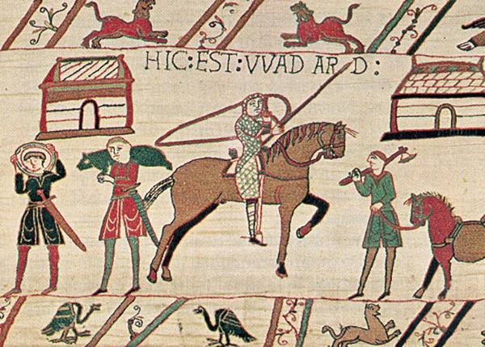
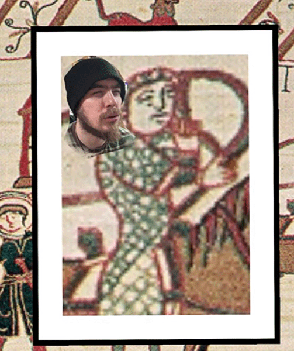
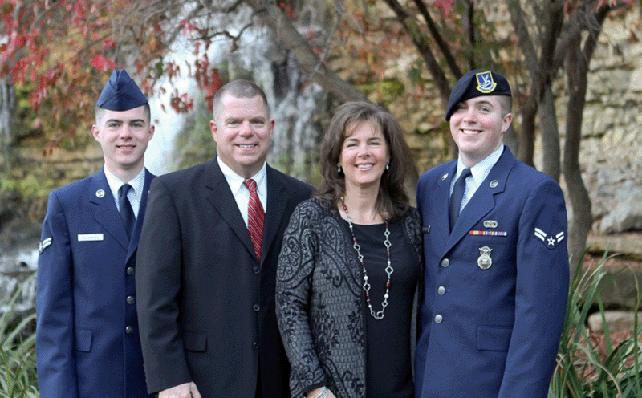
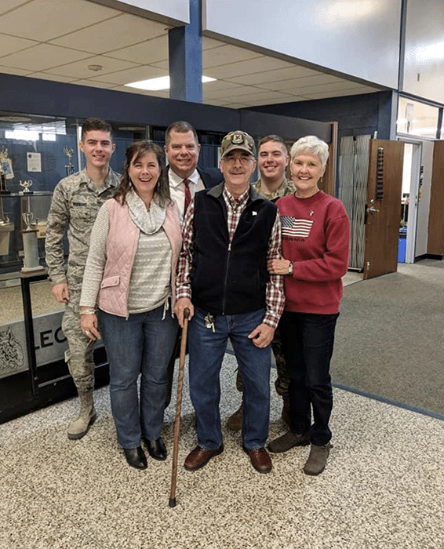
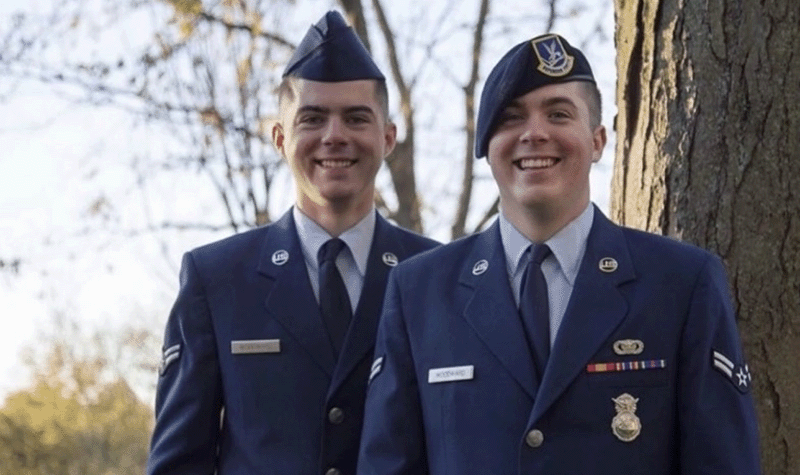
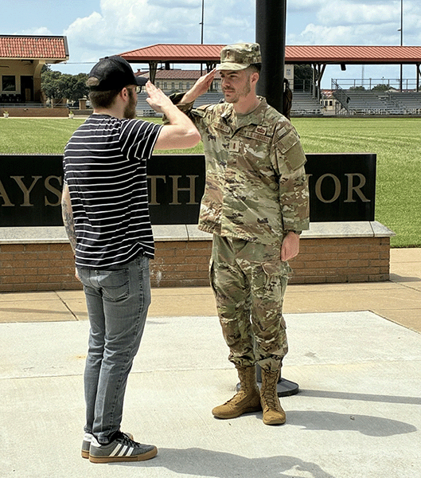
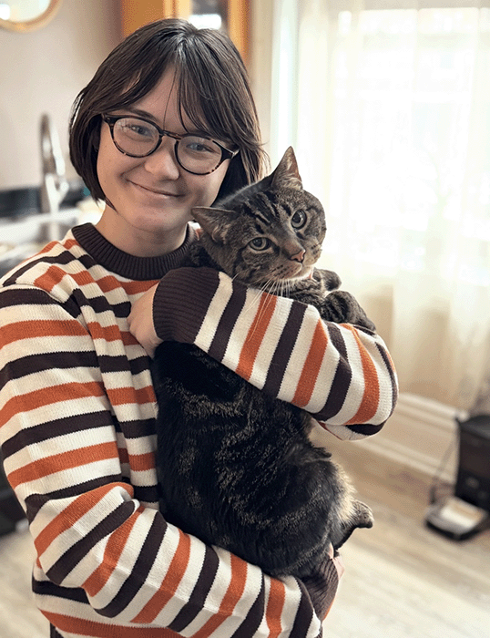
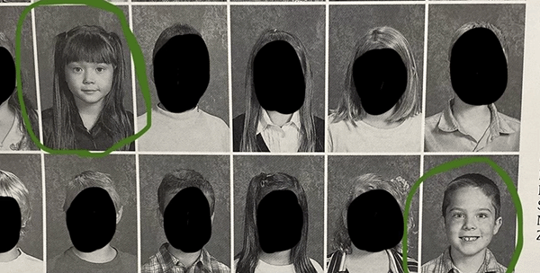
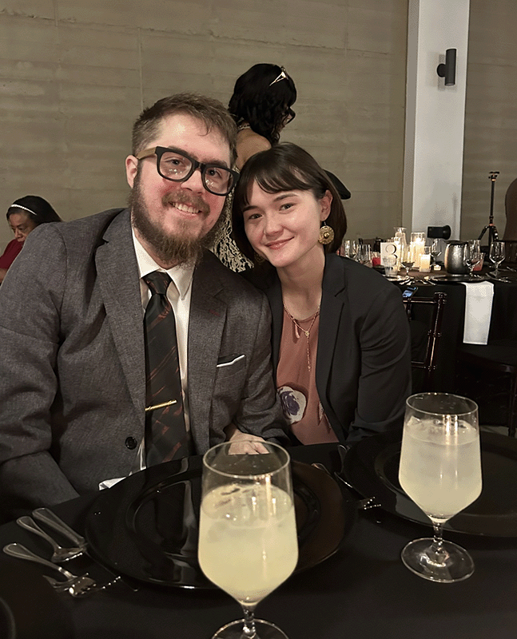

Ancestry

There are many individuals in my family who pride themselves with how thouroughly they complete our family's geneology. My paternal grandfather even had several published books about our family history. The earliest recorded account of a "Woodward" was at the Battle of Hastings in the year 1066. He was a knight (knighted by King Edward II) who received the task of guarding royal woods/lumber. There were no other historical accounts of Woodwards "or rather the old English, 'Wadard'". This resulted in a family tree that spreads across several continents. There are Woodwards I've met living in the same town as me who I never knew existed, let alone ever met. It sometimes can feel overwhelming but it's also very cool. I'm certainly glad we haven't all stayed in touch though, as the Woodward family gatherings of just close family are already nearly 75 people strong. I can't imagine how cramped it would get if we added any more to that number, haha.
This image shows my own face next to Wadard's for direct comparison.

As you can probably see, I basically look just like him.
We don't know much about the first Woodward. We don't even know his first name. Upon doing research about the tapestry he's depicted on, his story is simply: "Here he is". Which is kind of frustrating for someone trying to find additional info, but at the same time, absolutely hilarious; it just feels like something that would happen to a Woodward.

More recently
My immediate family includes my parents, Josh and Gillette, my maternal grandparents, Ron and Linda, my older brother Matthew and my (soon-to-be) wife Abby. My grandparents live in DeSoto just a few streets away from my parents and in general are in pretty good health. My parents both still work, but my dad retires at the end of the current school year - he's currently the superintendent at the Perry-Lecompton school district.


Inspired by my grandad who served in the Army (like I was), my brother also joined the Air Force; he enlisted a year or two before I did. While I separated at the rank of Senior Airman (E4), he got promoted all the way up to Technical Sergeant (E6). He went to Officer Training School (OTS) last year and graduated over the summer, so he's now a Second Lieutenant. He's currently awaiting his orders to go to his new tech school where he'll learn his new job as an officer.


My soon-to-be wife

My closest family member and best friend is my fiancee, Abby. There isn't anything in life that isn't better when she's around - and on the other side of the coin, things don't ever seem to be as good when she isn't around. For most of my life, I'd felt like I was missing some part of me and nothing I did seemed to help. Once I reconnected with Abby, I realized the missing part of me was her. I also realized that the only other time in which I didn't feel like something was missing was when she and I were together last.

Abby and I had gone both gone to Starside Elementary in DeSoto. We started hanging out together more on the playground in 2nd grade. I only remember that because in 3rd grade we got put in the same class - and I can still remember how excited I was about it. She was my best friend at school and even as a kid I can recall feeling different about her; perhaps my first crush? I was in 3rd grade so I'm not sure I even knew what a crush was yet, haha, but there was something different about Abby.
After 3rd grade, Abby told me she would be moving. So in my child mind, that basically meant she was dying; and I was heartbroken. We didn't talk for years after that. I thought she had moved somewhere really far away, across the country even. But I always caught myself wondering what ever happened to her. Until one day about two years ago, I pulled a book off of my bookshelf. It was a book she had given me for my birthday when we were kids - and it had her full first and last name (which I remembered, just not how to spell it, haha). So I looked her up and found her.
It turned out she had just moved to Holton, KS. Just a little over an hour away from where I grew up in DeSoto. But what's even crazier than that is that Holton is in the same area as Perry. There were multiple events and sports where Perry competed against Holton. Abby participated in Scholars Bowl and had attended a match at Perry. Since my dad was the middle school principal, he always had to stay for any event - and since he was my ride, so did I. This means Abby and I had even been in the same building at the same time on probably several occasions and had no idea.
After catching up, we agreed to meet up and catch up. So we met that upcoming Sunday.

We've been inseparable since Sunday, April 13, 2025 and get married on October 16, 2027.